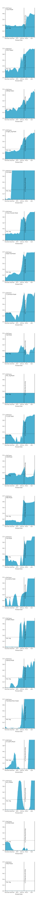

Current-season forecasts with highest peak week skill scores in 2018-19 »
Additional forecasts »
The charts below show forecast skill scores for each model submitted to the CDC FluSight Challenge, focusing only on forecasts of U.S. peak week. Forecast skill is based on both accuracy (log scores) and confidence (distributional sharpness) over the entire season. It varies as modeling teams update their forecasts each week.
* Note that these skill scores are for the 2018-19 flu season as the 2019-20 scores are not currently available.
The charts below show forecast skill scores for each model submitted to the CDC FluSight Challenge, focusing only on forecasts of U.S. peak week. Forecast skill is based on both accuracy (log scores) and confidence (distributional sharpness) over the entire season. It varies as modeling teams update their forecasts each week.
* Note that these skill scores are for the 2018-19 flu season as the 2019-20 scores are not currently available. 